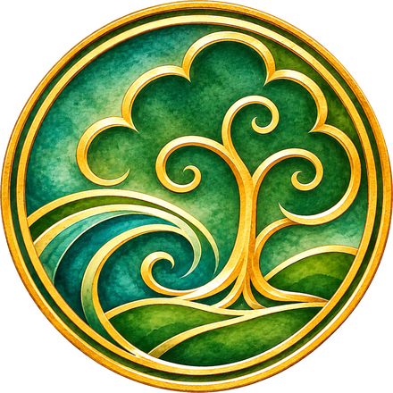
The story of
Atlantis Rising · Myth Made Medicine
Bringing love, creativity and joy back to the world of plant medicine, especially cannabis.
Begin the story
The story of
Atlantis Rising · Myth Made Medicine
Bringing love, creativity and joy back to the world of plant medicine, especially cannabis.
Begin the storyThink of a cannabis guide like Leafly, but every strain belongs to a living world: a realm, a keeper, a story you can step inside.
The guide
The folklore
Atlantean Gardens: where myth is made medicine.
Collect the legends. Every strain in the Garden is brought to life as a painted character, with a name, a title and a home in the Atlas.
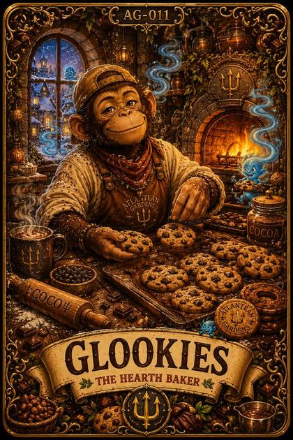
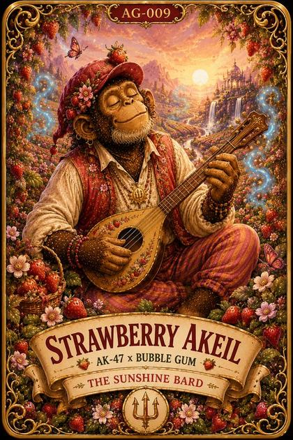
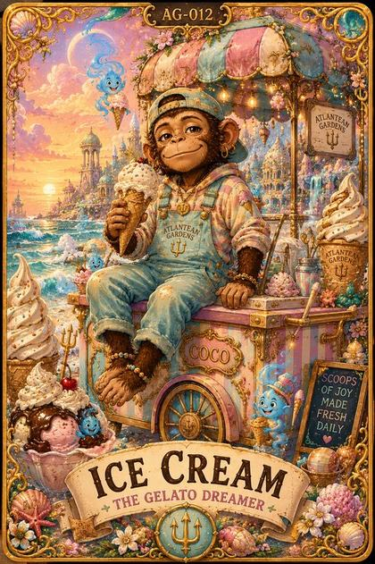
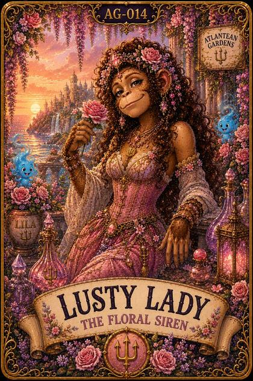
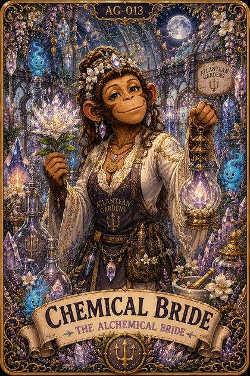
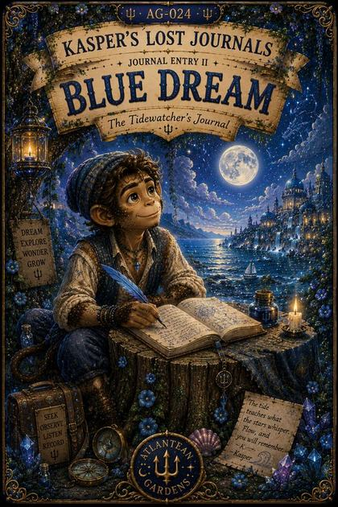
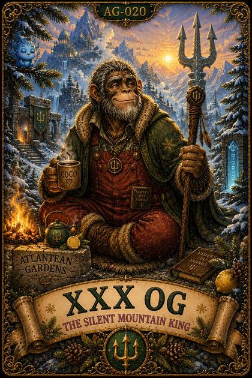
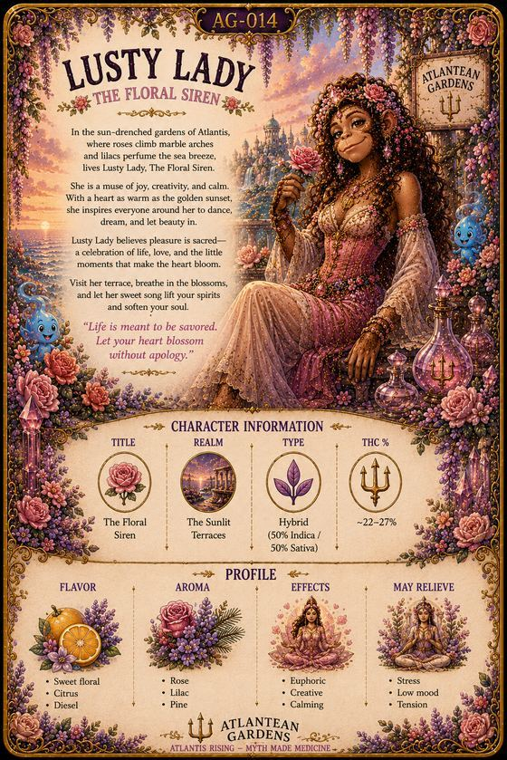
Anatomy of a card
A short storybook tale ties each strain to its realm and ends on a gentle reflection.
Below it sit a flavour profile, an effects profile and grounded, realistic potency, with no exaggerated claims.
Gentle, warm and clear. Feeling over hype.
The Atlanteans believed that every plant carries a gift.
No map has ever captured the whole of Atlantis. This one is simply where today's journey begins. Every strain lives somewhere in the Living Atlas.
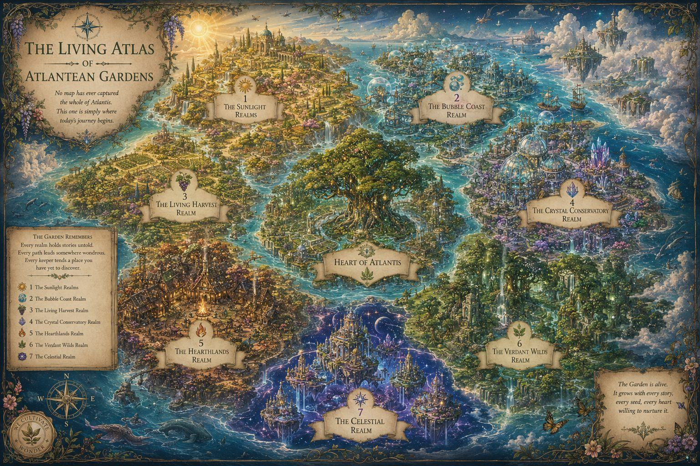
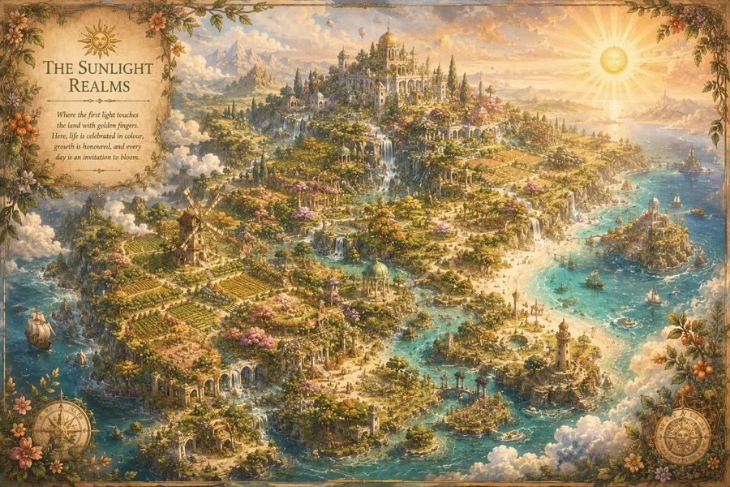
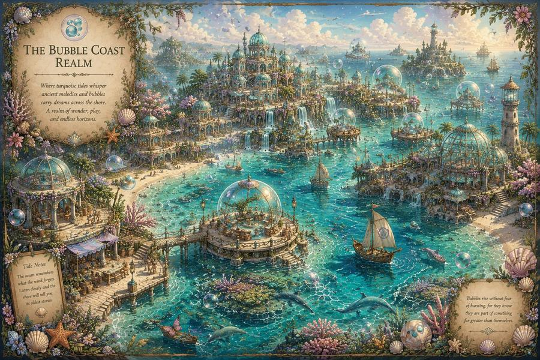
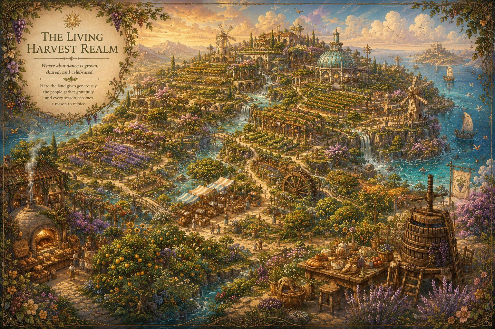
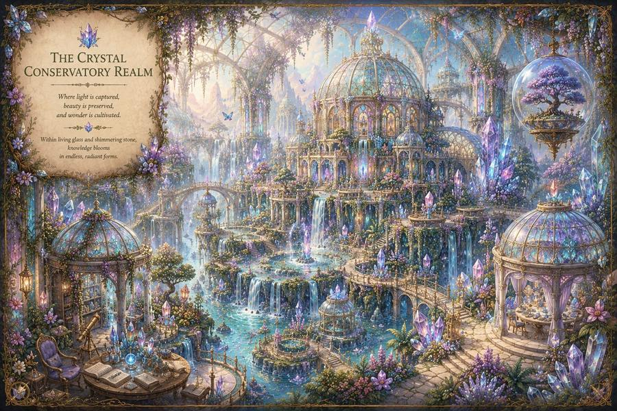
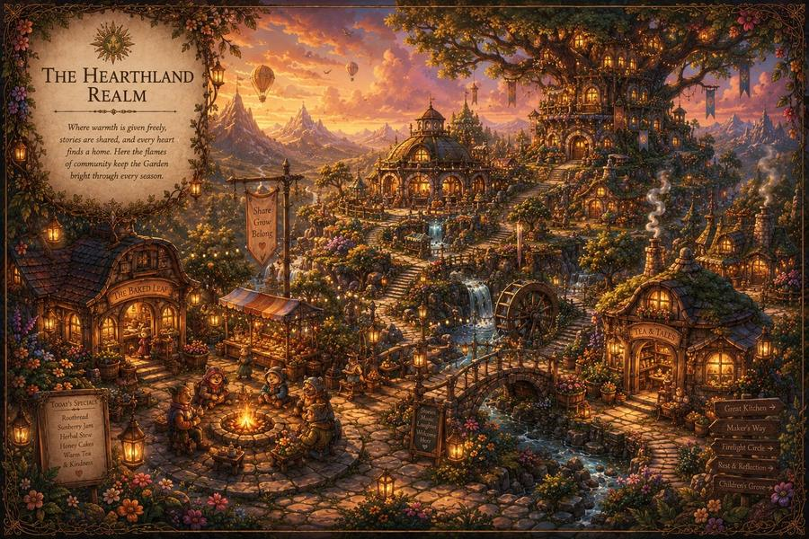
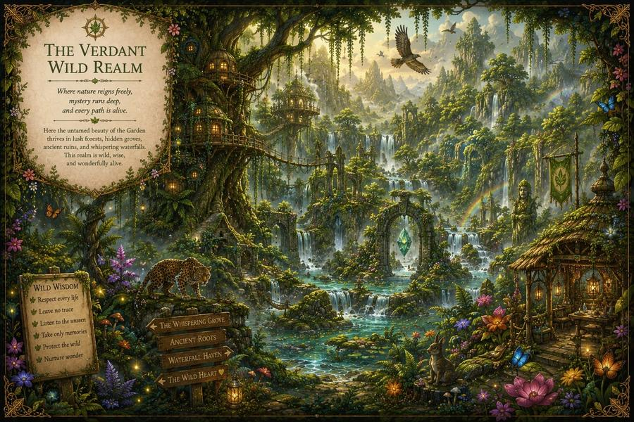
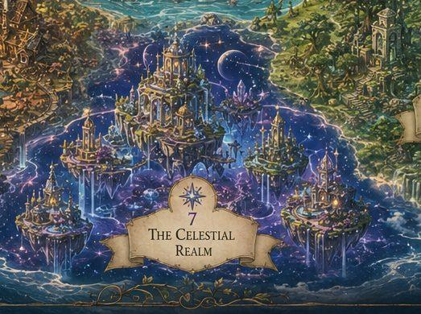
Each Keeper brings a unique gift. None is greater than another. Each helps the others flourish.
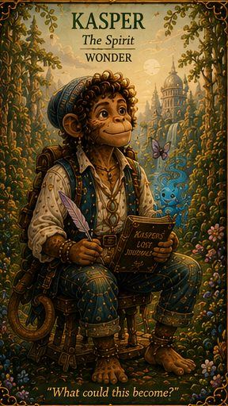
“What could this become?”
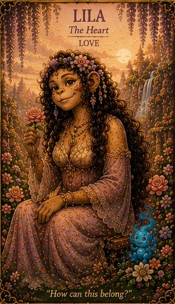
“How can this belong?”
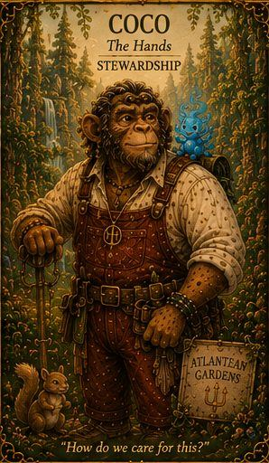
“How do we care for this?”
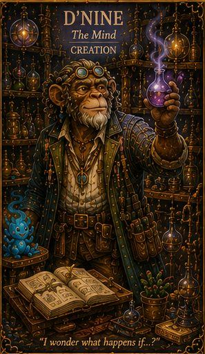
“I wonder what happens if...?”
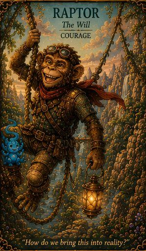
“How do we bring this into reality?”
Only together does the Garden truly bloom.
Chapter VI · The First Covenant of the Garden
Those who enter these gardens are not customers.
They are fellow travellers.
The full immersive experience is being cultivated now: the Living Atlas, where the guide and the folklore become one place to wander.
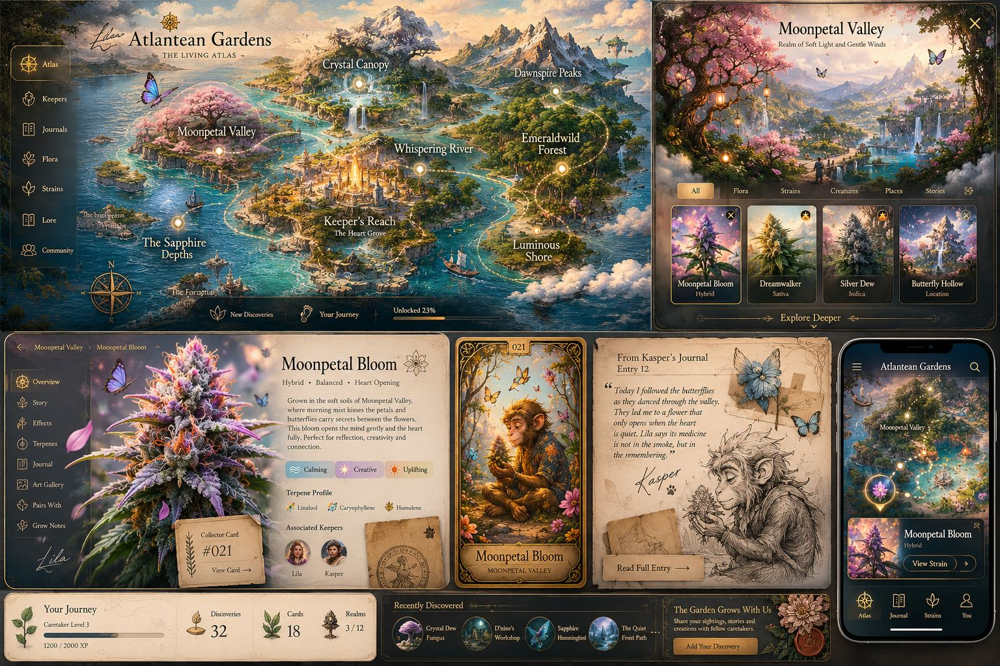
If you find yourself speaking a little more kindly...
Listening a little more deeply...
Walking a little more gently...
Then Atlantis has risen once again.
Not beneath your feet... but within your heart.